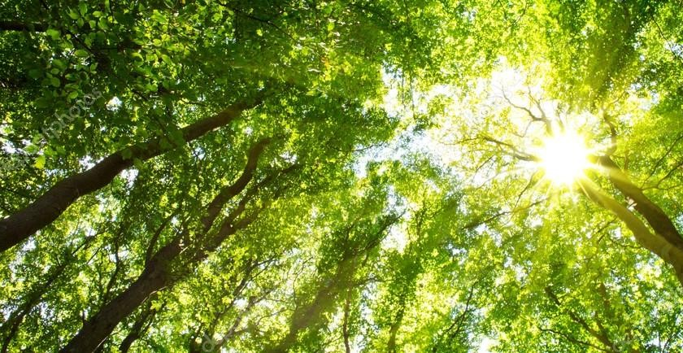
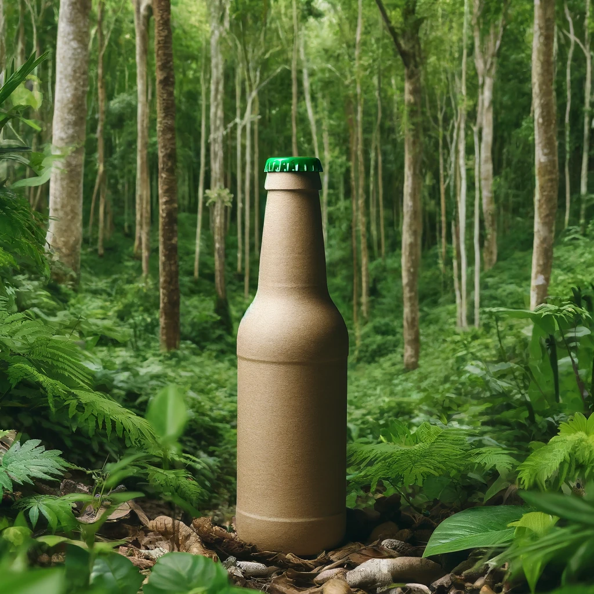

Vores Emballage
Et skridt mod en grønnere fremtid

Vi vil hos ZEROBUZZ BREW gerne være med til at tage et skridt mod en grønnere fremtid og vi har derfor taget et utraditionelt valg: vores flaske består af træfibre. Hos ZEROBUZZ BREW tror vi på, at denne form for emballage er fremtiden. Vi ved, at det kan være en udfordring for forbrugerne at vænne sig til en anderledes flaske, men vi er overbeviste om, at dette skridt er nødvendigt for en grønnere fremtid. Lad os gøre en forskel sammen og sikre os, at de kommende generationer også kan nyde godt af vores klode. Der er flere grunde til hvorfor vores valg af emballage er bæredygtige:
Reduktion af CO2-udledning
Bæredygtige flasker som vores kræver mindre energi at producere sammenlignet med traditionelle glasflasker og aluminiumdåser. Produktionen af glas og aluminium er energikrævende processer, der ofte er afhængige af fossile brændstoffer. Ved at bruge flasker lavet af genanvendelige træfibre reducerer vi vores samlede CO2-udledning betydeligt.
Læs også: Fremtidens ølflasker skal laves af træfibre og bioplast
Natur og Miljø
Vores bæredygtige flasker er designet til at være biologisk nedbrydelige, hvilket betyder, at de ikke efterlader skadeligt affald i naturen. Glas kan tage tusinder af år at nedbryde, og aluminiumdåser kan tage op til 200-500 år. Ved at vælge flasker, der nedbrydes hurtigt og naturligt, minimerer vi vores påvirkning på jord og vandressourcer.
Råmaterialernes Bæredygtighed
Flaskerne er fremstillet af træfibre, et materiale der er både genanvendeligt og bæredygtigt. Udvindingen og behandlingen af disse fibre har en mindre miljøpåvirkning sammenlignet med udvindingen af råmaterialer til glas og aluminium. Desuden støtter vi bæredygtig skovdrift, hvilket bidrager til bevarelse af skovområder og biodiversitet.
Læs også: Flasker af træ kan erstatte miljøbelastende plastflasker
Transporteffektivitet
Træfiberflasker er lettere end glasflasker, hvilket betyder, at de kræver mindre brændstof til transport. Dette reducerer de samlede transportomkostninger og den tilknyttede CO2-udledning, hvilket er en vigtig faktor i vores samlede bæredygtighedsstrategi.
Vores Engagement i Bæredygtig Emballage
Moderne forbrugere er mere miljøbevidste end nogensinde før. Ved at vælge bæredygtige flasker appellerer vi til denne voksende demografiske gruppe, der prioriterer virksomheder, der tager konkrete skridt mod en grønnere fremtid. Sammenhold er vigtigere end alkohol, og vores bæredygtige initiativer understøtter denne værdi ved at skabe et fællesskab omkring miljøansvar.
Vi ønsker at være et bryggeri, der ikke kun leverer kvalitetsøl, men også tager ansvar for vores miljøpåvirkning. Så lad os sammen vinke farvel til den gammelkendte grønne glasflaske og velkommen til et nyt bæredygtigt alternativ.